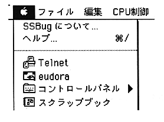

SSBug can also be operated with a standard Macintosh user interface.
In the state where numeric input is accepted in the dialog, the same expression expression as the console environment can be used.
Apple menu
Apple menu has two items.

"About SSBug ..." displays the following versions of SSBug. Click in the window to end the display.